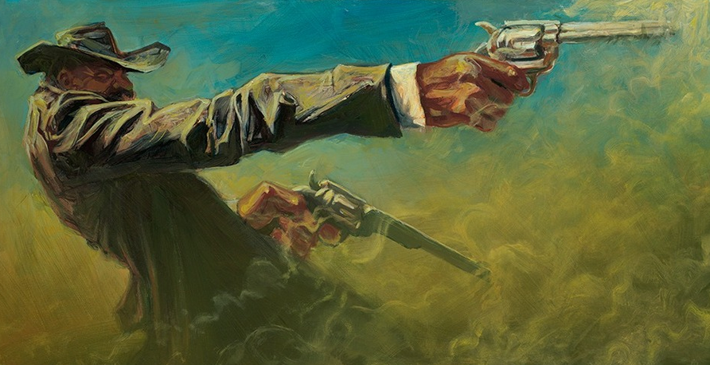
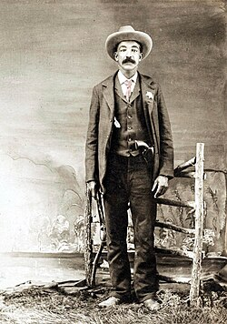
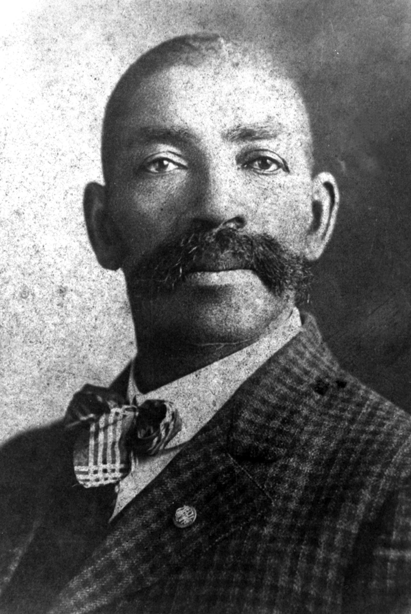
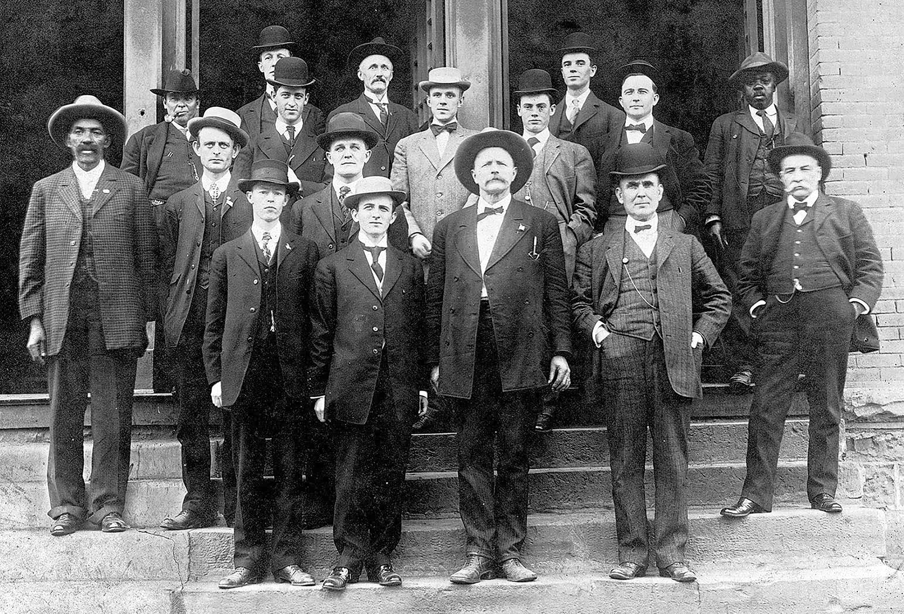

Bass Reeves truly was a larger-than-life figure who seemed capable of anything. Serving for 32 years as one of the first Black United States Deputy Marshals, he spent his historic career bringing law and order to the Native American territories that now make up the state of Oklahoma.
Boasting more than 3,000 felony arrests with only 14 documented self-defense kills, Reeves was legendary for executing brilliant schemes to achieve peaceful apprehensions. He frequently utilized clever disguises and sneaked into outlaw camps in the dead of night to catch fugitives off guard.
However, Reeves was far from a one-trick pony. He was a master marksman, so skilled that he was eventually banned from local shooting competitions just to give other contestants a fair chance at winning. He brought that monstrous precision into the line of duty when absolutely necessary, such as the day he was forced to take the life of a notorious murderer and thief named Tom Story. When later asked about the gunfight, Reeves famously and bluntly remarked, "Story committed suicide."
Through unyielding courage, unmatched wit, and legendary skill, Bass Reeves solidified his legacy not just as a lawman, but as the ultimate frontier hero—a true G.O.A.T. of the American Wild West.
Some of Bass's notable kills include:

